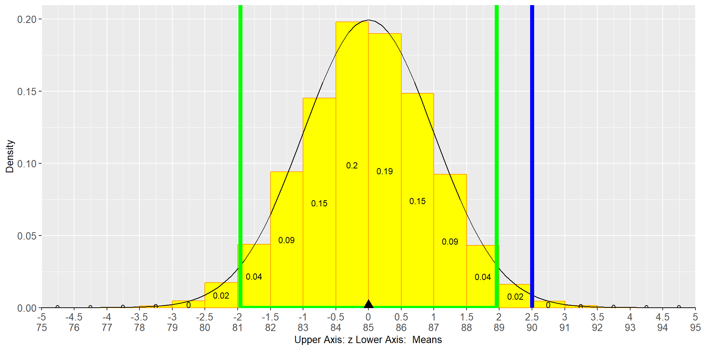

You will learn how to work with sample measurements (called: “statistics”)
You learned already to calculate these statistics, such as the sample mean
You will learn that statistics vary with different samples and that you can estimate the Standard Error even when you can see only one sample
You will distinguish between Standard Deviation and Standard Error and learn how to calculate the Standard Error
You will distinguish between Normal Distribution and t-Distribution
You will calculate a Confidence Interval for a mean based on its Standard Error
You will learn that means from multiple samples are normal distributed even when the original data are not normal distributed
pnorm(x, mean=?, sd=?) calculates the probability of getting a value smaller than x.
Try: Probability of a value of smaller than 360 when the mean is 230.5 and the standard deviation is 50
A survey of 50 customers from a branch leads to average sentiment score of 72 (scale 0 - 100). It is known that the Mean for all customers is \(70\) and the Standard Deviation is \(3\).
The mean of the sample is different than the mean of all customers This should not come as surprise. If we had used another sample, we would have measured a different mean.
So, by how much would the Sample Mean spread, if we considered several surveys each with \(N=50\)?
(Note, the spread of a sample mean is called Standard Error)
\[SE=\frac{StdDev}{\sqrt{N}}\]
Provide Data for 3 Samples (A, B, C):
\[SE=\frac{StdDev}{\sqrt{N}}\]
Since the sample mean is often normal distributed (\(N>30\) as a rule of thumb), we can use all the instruments we learned:
qnorm(ProbNotExceeded,Mean,Std/SE)
Our daily sales data for a new product are normally distributed. We do not know the Mean nor the Standard Deviation.
However, we have data from the last 36 days to estimate the Mean and Standard Deviation based on our sample data.
Sample Size: \(N=36\)
Estimated Mean in ($ 1,000): \(\bar x= 90\)
Estimated Standard Deviation: \(StdDev= 12\)
Estimated Standard Error: \(SE= \frac{12}{\sqrt{36}}=2\)
If the Standard Deviation is not known and is estimated from the sample:
Normal Distribution changes to a t-Distribution
However, Normal Distribution and t-Distribution are very similar with the t-Distribution having fatter tails.
Sample Size: \(N=36\) Estimated Mean in ($ 1,000): \(\bar x= 90\)
Estimated Standard Deviation: \(StdDev= 12\)
Estimated Standard Error: \(SE= \frac{12}{\sqrt{36}}=2\)
Not correct: Confidence Interval based on qnorm():
Confidence Interval based on qstudent_t():
H0: Before the sample of 36 days was taken, it was believed that the Mean for sales is 85?
A (Research): Research of the 36 days suggests that the Mean is different \((\bar x=90)\).
Is the mean from the sample just by accident different from 80 or is there more behind it? The latter would mean the H0 is likely wrong.
Let us work with 95% Confidence.
